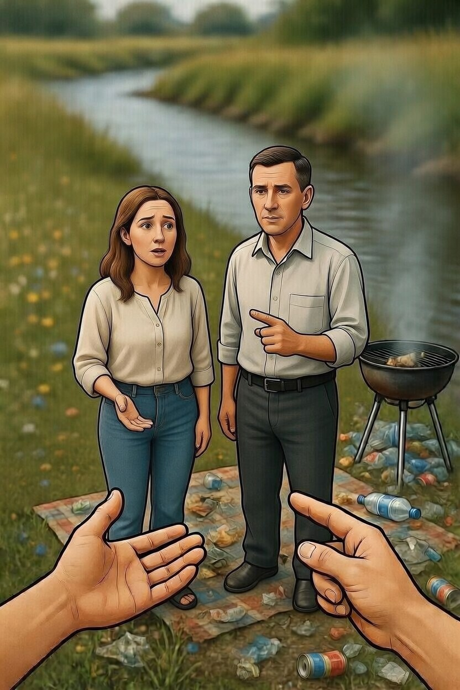
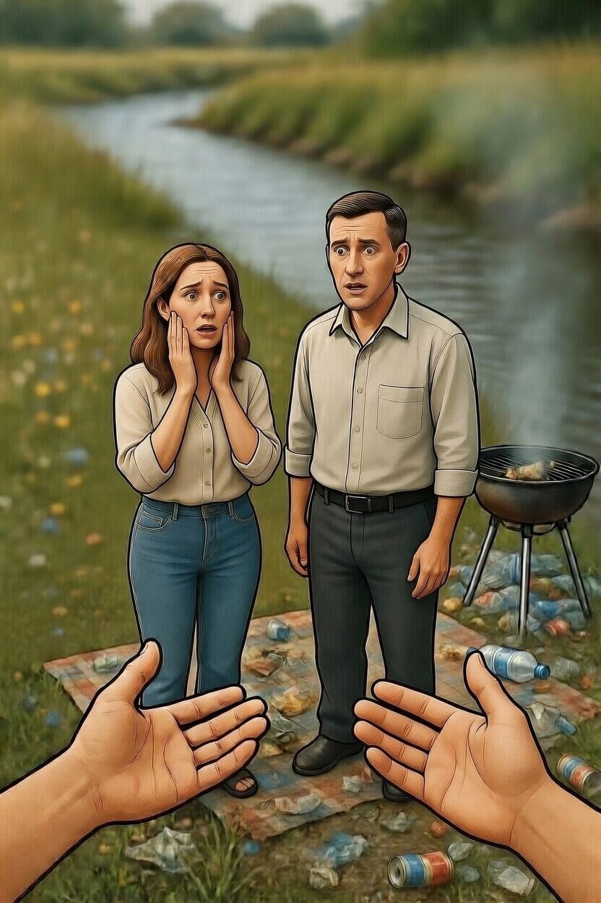

Ты молча начинаешь собирать мусор. Сначала отдыхающие не замечают, но когда ты забираешь пустую банку из-под рук мужчины, он возмущается: «Эй, ты чего делаешь? Мы тут отдыхаем!»
Женщина, которая мыла посуду в роднике, замечает твои действия и неловко подходит к тебе: «Зачем вы это делаете?»
Мужчина продолжает: «Оставь наши вещи в покое! Мы сами уберем, когда уедем». Но ты видишь, что вокруг уже гора мусора, и они явно не собирались ничего убирать.-
Как ты ответишь?

Спокойно сказать: «Я живу в деревне ниже по течению. Мы пьем эту воду. Когда вы моете посуду с химией в роднике, это попадает в наши краны. У нас дети пьют эту воду»

Сделать вид, что ты фотограф, и сказать: «Я здесь для календаря заповедников ПМР. Мои фото пойдут в администрацию. Вы не против, если вы попадете на разворот "Как НЕ надо отдыхать"?»